router, factura, pago o cliente.Guía práctica de ISPMAX
Este manual documenta el sistema de forma clara y directa, pensado para operadores, administradores y técnicos que trabajan con ISPMAX a diario.
Primeros pasos
Para ingresar a ISPMAX necesitas un usuario y contraseña proporcionados por el administrador. Cada usuario accede únicamente a los módulos que su rol permite.
1. Ingresa al sistema
Abre la dirección de ISPMAX en tu navegador, escribe tu usuario y contraseña, y presiona Iniciar sesión.
2. Revisa tu rol
En la parte superior verás tu rol. Este define qué módulos puedes ver y qué acciones puedes realizar.
3. Usa los filtros
La mayoría de módulos permite filtrar por router, sucursal, fecha o estado. Úsalos antes de exportar reportes o tomar decisiones.
Dashboard
Es la pantalla inicial. Muestra un resumen del estado financiero y operativo del ISP: clientes, servicios, cobros, facturas pendientes y últimos movimientos.
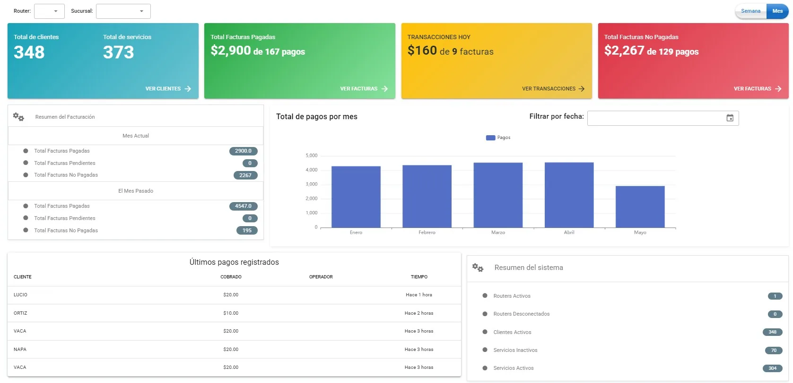
| Bloque | Qué muestra | Cómo interpretarlo |
|---|---|---|
| Total de clientes / servicios | Cantidad de clientes registrados y servicios creados. | Un cliente puede tener más de un servicio activo, por eso ambos valores pueden diferir. |
| Facturas pagadas | Monto cobrado y número de pagos del periodo. | Refleja la recaudación del mes o periodo seleccionado. |
| Transacciones hoy | Cobros registrados durante el día. | Ideal para seguimiento de caja diaria. |
| Facturas no pagadas | Monto pendiente y cantidad de facturas sin cancelar según el periodo o filtro aplicado. | Úsalo como alerta de cartera vencida. |
| Resumen de facturación | Comparación entre mes actual y mes pasado. | Compara mes actual y mes pasado. Puede mostrar facturas pagadas, pendientes y no pagadas según los filtros seleccionados. |
| Últimos pagos | Pagos registrados recientemente. | Permite confirmar operaciones recientes sin entrar al módulo de transacciones. |
TODOS se muestra información consolidada.Routers
Permite registrar y administrar los equipos MikroTik conectados al sistema. Desde aquí se controla la comunicación entre ISPMAX y cada router, y se gestionan los clientes asociados a cada uno.
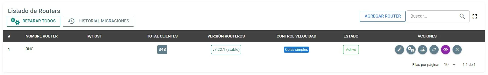
Columnas del listado
| Columna | Descripción |
|---|---|
| Nombre Router | Nombre identificador del equipo dentro de ISPMAX. |
| IP / Host | Dirección IP o nombre de host usado para conectarse al router. |
| Total Clientes | Cantidad de clientes asignados a ese router. |
| Versión RouterOS | Versión del sistema operativo MikroTik instalada. |
| Control Velocidad | Método de gestión de ancho de banda (ej. Colas Simples). |
| Estado | Activo disponible · Inactivo deshabilitado. |
Acciones disponibles por router
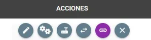
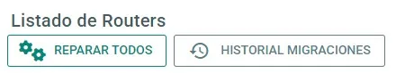
| Acción | Qué hace | Cuándo usarla |
|---|---|---|
| ✏️ Editar | Modifica nombre, IP/host, credenciales API, versión, control de velocidad, sucursal y más. | Cuando cambió la IP, credenciales o configuración del equipo. |
| ⚙️ Reparar | Vuelve a sincronizar los clientes de ISPMAX con el router MikroTik: recrea colas de velocidad y reubica IPs en listas. No reinicia el router físicamente; opera solo a través de la API. | Después de cambios en planes, IPs, clientes o estados de servicio que requieren resincronización. |
| 📶 Comprobar conexión | Verifica que ISPMAX puede comunicarse con el router vía API. | Antes de operaciones masivas o después de cambiar credenciales. |
| ↩️ Migrar clientes | Traslada todos los clientes de un router origen a un router destino. | Al reemplazar un equipo o reorganizar la red. |
| 🔗 Amarre masivo | Aplica restricción IP/MAC a todos los clientes activos y en línea del router. Solo el equipo con la IP y MAC registradas puede usar el servicio. | Redes que operan con control estricto por IP y dirección MAC. |
| ✕ Desactivar | Inhabilita el router en el sistema. Puede reactivarse con el ícono de verificación. | Cuando el equipo ya no se gestiona desde ISPMAX. |
Opciones generales del listado
Reparar todos
Ejecuta la sincronización en todos los routers activos de forma simultánea. Solicita confirmación antes de proceder.
Historial de migraciones
Registro de todas las migraciones de clientes entre routers realizadas en el sistema.
Agregar router
Abre el formulario para registrar un nuevo equipo con todos sus parámetros de conexión y configuración.
Formulario Editar / Agregar router — campos
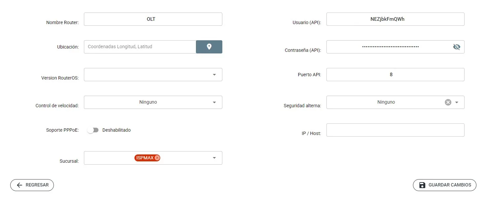
| Campo | Descripción |
|---|---|
| Nombre Router | Nombre identificador del router en ISPMAX. |
| Ubicación | Coordenadas geográficas (longitud, latitud) del equipo. |
| Versión RouterOS | Versión del sistema MikroTik utilizada por el router. |
| Control de velocidad | Método de gestión de ancho de banda: Colas Simples u otro disponible. |
| Soporte PPPoE | Activa o desactiva el soporte PPPoE en este router. |
| Sucursal | Sucursal del ISP a la que pertenece este equipo. |
| Detrás de NAT/Docker | Indica si el router opera detrás de NAT o en entorno Docker. |
| Usuario (API) | Usuario configurado en MikroTik para la conexión API. |
| Contraseña (API) | Contraseña del usuario API. |
| Puerto API | Puerto habilitado en MikroTik para la API (por defecto 8728). |
| Seguridad alterna | Configuración de seguridad adicional si aplica. |
| IP / Host | Dirección IP pública o nombre de host del router. |
| Puerto SSL | Puerto para conexión cifrada con API SSL. |
Redes IPv4
Permite registrar y administrar los rangos de direcciones IP que el ISP utiliza para asignar a sus clientes. Cada red se asocia a un router específico. El selector Router filtra el listado para mostrar únicamente las redes del router seleccionado.
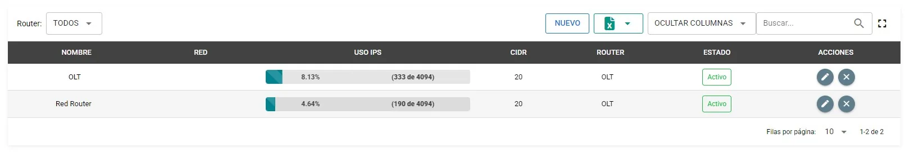
| Columna | Descripción |
|---|---|
| Nombre | Etiqueta descriptiva de la red (ej. RED ISP - FIBRA). |
| Red | Dirección base del rango (ej. 10.10.6.0). |
| Uso IPs | Porcentaje y cantidad de IPs ocupadas sobre el total disponible. |
| CIDR | Máscara de subred en notación CIDR (ej. /24, /23). |
| Router | Equipo al que pertenece esta red. |
| Estado | Activo disponible · Inactivo deshabilitado. |
Importar, exportar y ocultar columnas
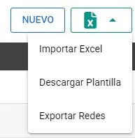
- Importar Excel: carga redes IPv4 en bloque desde un archivo con el formato de plantilla ISPMAX.
- Descargar Plantilla: entrega el formato base con columnas: Nombre, Red, Clase (A/B/C), CIDR, Router.
- Exportar Redes: descarga el listado actual en formato Excel.
Redes IPv6
Permite registrar rangos de direcciones IPv6 para los servicios que utilizan este protocolo. Funciona de forma análoga a Redes IPv4.
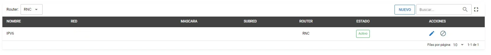
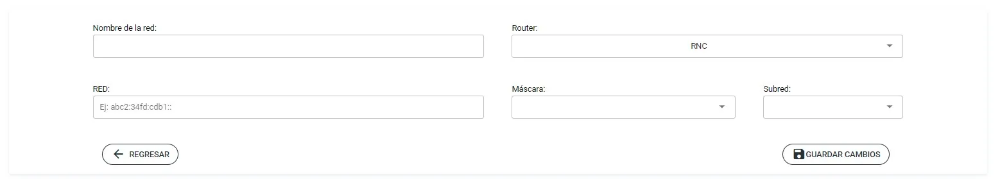
| Columna / Campo | Descripción |
|---|---|
| Nombre | Nombre identificador de la red. |
| Red | Dirección base en formato IPv6 (ej. 2803:2540:1c::). |
| Máscara | Prefijo de la red (ej. 50). |
| Subred | Tamaño de subred asignado (ej. 64). |
| Router | Equipo al que pertenece esta red. |
| Estado | Activo o Inactivo. |
Planes de servicio
Los planes definen la velocidad, precio e impuestos que se asignan a los servicios de internet de los clientes. Cada plan se asocia a uno o varios routers. El selector Por Router filtra el listado.
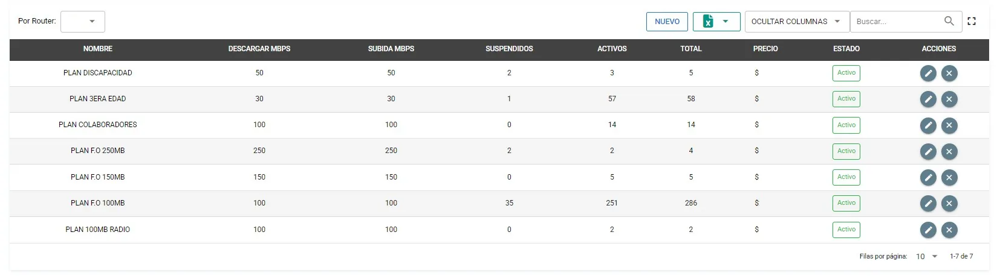
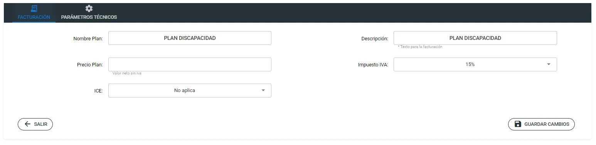
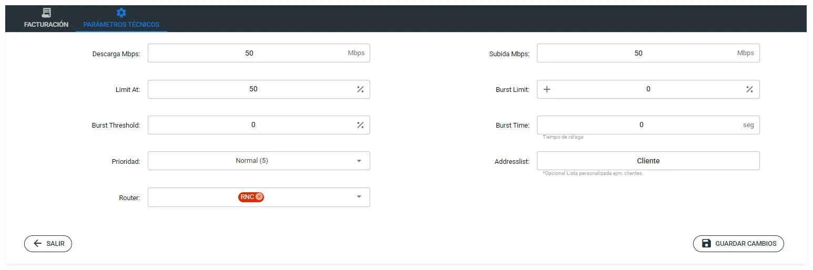
| Campo | Uso |
|---|---|
| Nombre plan | Nombre comercial visible para operadores y en comprobantes. |
| Descripción | Texto que puede aparecer en la factura del cliente. |
| Precio Plan | Valor mensual neto sin IVA. |
| Impuesto IVA / ICE | Impuestos aplicables según configuración tributaria. |
| Descarga / Subida Mbps | Velocidad máxima del plan. |
| Limit At | Velocidad garantizada mínima. |
| Burst Limit | Velocidad máxima de ráfaga permitida temporalmente. |
| Burst Threshold | Umbral de tráfico desde el cual se activa el burst. |
| Burst Time | Duración máxima de la ráfaga (en segundos). |
| Prioridad | Nivel de prioridad del tráfico en el router frente a otros planes. |
| Address List | Lista personalizada en MikroTik donde se agrupan los clientes del plan (opcional). |
| Router | Equipo o equipos donde aplica este plan. |
Cajas NAP
Las cajas NAP representan los puntos físicos de distribución de fibra óptica instalados en campo. Permiten organizar puertos, registrar detalles técnicos de instalación y localizar los equipos desde el mapa.
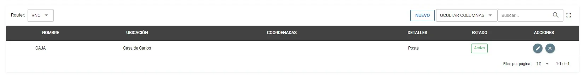
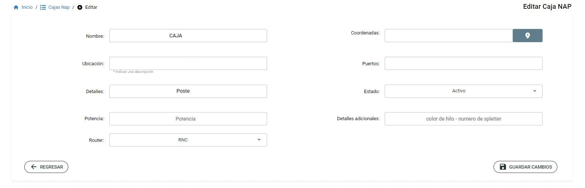
| Campo | Descripción |
|---|---|
| Nombre | Nombre identificador de la caja. |
| Ubicación | Referencia física: calle, sector o poste. |
| Coordenadas | Longitud y latitud para ubicar la caja en el mapa. |
| Puertos | Número de puertos disponibles en la caja. |
| Detalles | Referencia adicional (ej. Poste 5). |
| Estado | Activo · En mantenimiento · Desactivada |
| Potencia | Nivel de señal óptica registrado en la caja. |
| Detalles adicionales | Información complementaria: color de hilo, número de splitter. |
| Router | Router al que pertenece esta caja NAP. |
Mapa de red y clientes
El mapa muestra la ubicación geográfica de los clientes y cajas NAP registrados en el sistema. Es útil para soporte en campo, planificación de cobertura y revisión rápida de la distribución de la red.
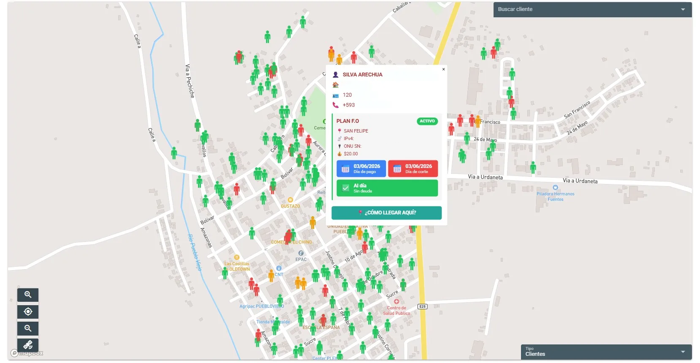
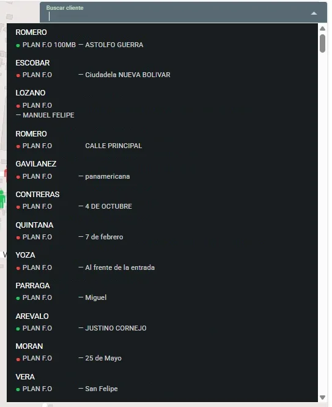
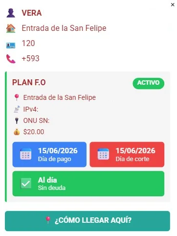
Marcadores en el mapa
- 🟢 Verde — Cliente activo.
- 🔴 Rojo — Cliente inactivo o suspendido.
Selector Tipo
Esquina inferior derecha. Permite alternar la vista entre: Cajas NAP y Clientes, Clientes y Cajas NAP.
SmartOLT
Integra ISPMAX con la plataforma externa SmartOLT para la administración de redes de fibra óptica. Permite consultar ONUs, VLANs, zonas, perfiles de velocidad y ejecutar acciones sobre los equipos de la red óptica.
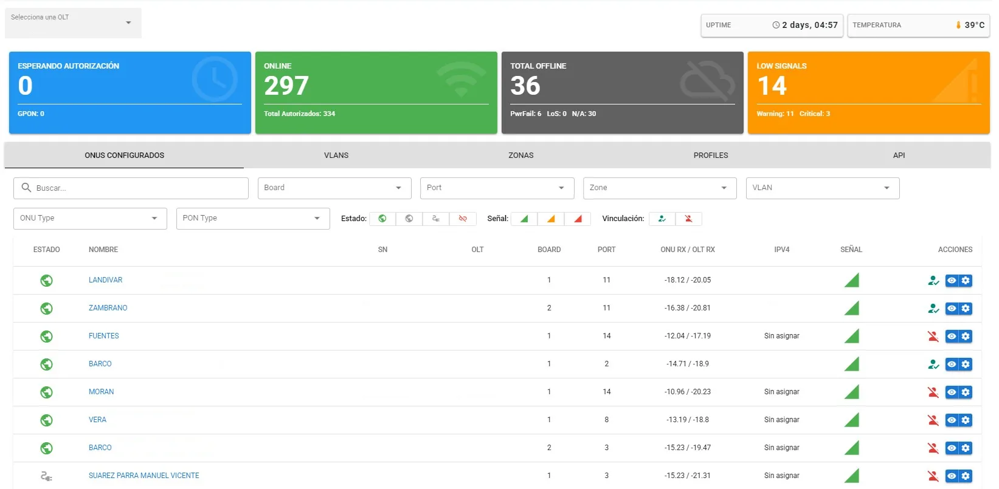
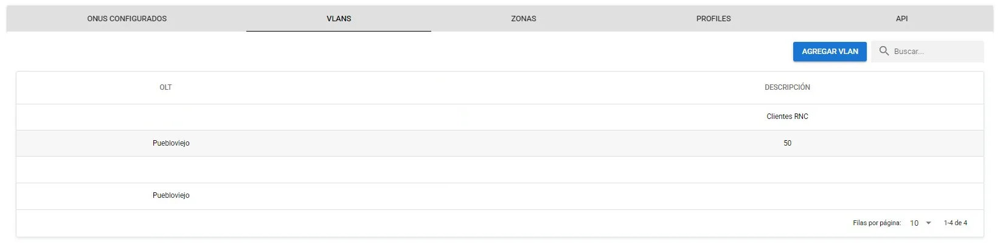
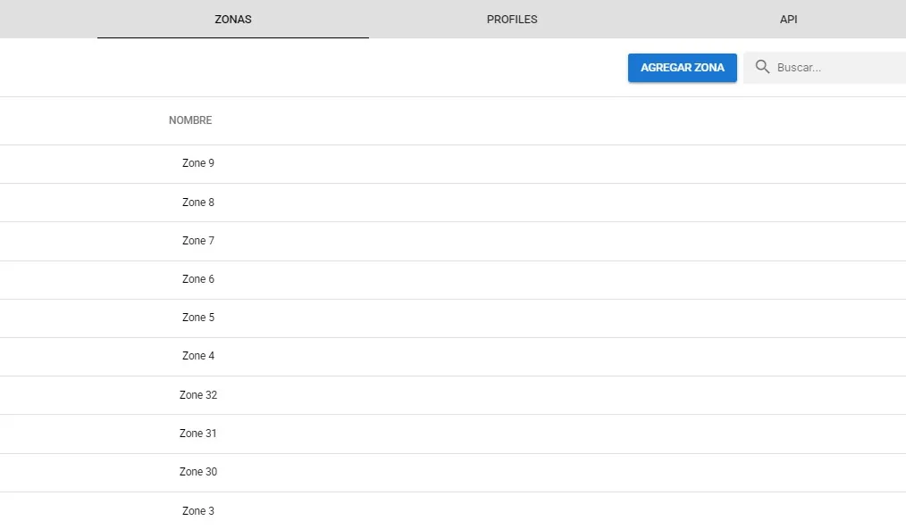
| Sección / Pestaña | Descripción |
|---|---|
| ONUs Configurados | Listado de ONUs vinculadas desde SmartOLT. Muestra estado, nombre, SN, OLT, board, puerto, señal e IPv4. Permite autorizar, habilitar, deshabilitar, reiniciar y ver información técnica de cada ONU. |
| VLANs | VLANs configuradas organizadas por OLT. Al agregar una VLAN se especifica ID, descripción y uso: IPTV, MGMT/VOIP, DHCP Snooping o LAN to LAN. |
| Zonas | Agrupan ONUs por área geográfica o segmento de red. El nombre de la zona debe coincidir exactamente con el nombre registrado en SmartOLT. |
| Profiles | Perfiles de velocidad disponibles en SmartOLT, divididos en Perfiles de Descarga y Perfiles de Subida. Se sincronizan desde SmartOLT. |
| API | Configuración de la integración. Requiere: Subdominio (ej. miempresa o miempresa.smartolt.com) y API Key. |
AdminOLT
AdminOLT es una integración equivalente a SmartOLT para la administración de redes de fibra óptica. Son servicios distintos del mismo mercado; ISPMAX permite conectarse con ambos de forma independiente. La lógica de configuración y uso es la misma que SmartOLT.
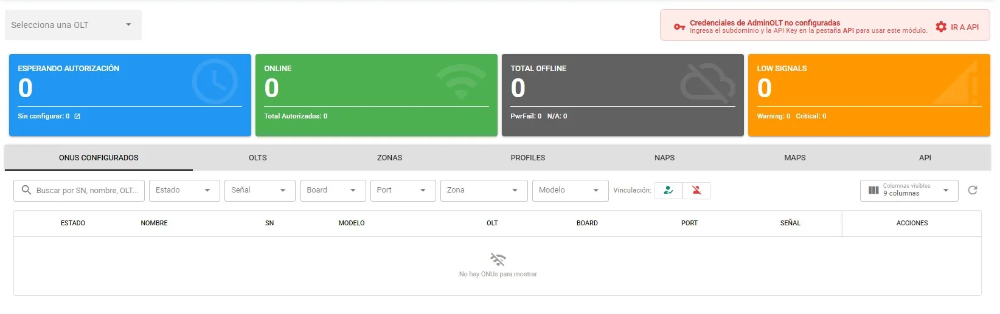
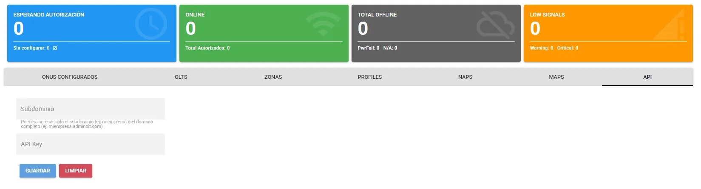
| Pestaña | Qué permite hacer |
|---|---|
| ONUs Configurados | Consultar y filtrar ONUs por nombre, estado, señal, board, puerto o zona. |
| OLTs | Ver OLTs configuradas: nombre, host/IP, fabricante, modelo, versión SW y perfiles. |
| Zonas | Organizar zonas de cobertura. El nombre debe coincidir con el registrado en AdminOLT. |
| Profiles | Perfiles de descarga y subida disponibles en la plataforma AdminOLT. |
| NAPs | Cajas o puntos de conexión registrados en AdminOLT (número y ODB/Splitter). |
| Maps | Mapas o rutas configuradas: nombre, descripción, marcadores, distancia y fecha. |
| API | Requiere Subdominio y API Key de AdminOLT para establecer la conexión con ISPMAX. |
Servicios personalizados
Permite crear servicios o cargos adicionales que no corresponden a un plan de internet estándar. Se usa para registrar conceptos especiales de facturación adaptados a necesidades particulares: descuentos fijos, cargos por instalación o servicios complementarios.
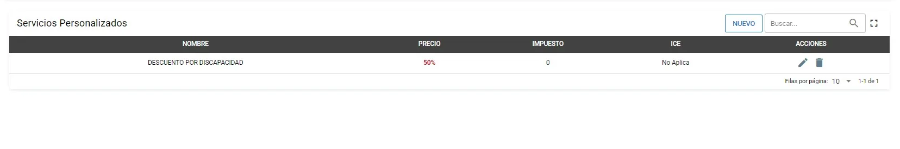
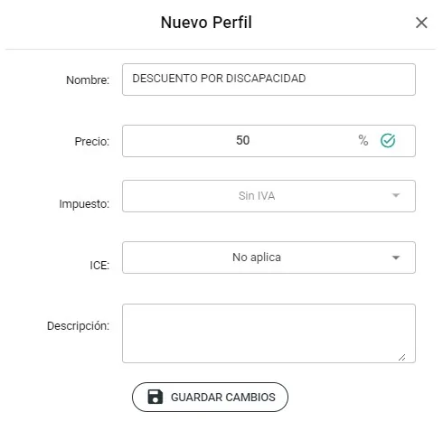
| Campo | Descripción |
|---|---|
| Nombre | Nombre del concepto (ej. DESCUENTO POR DISCAPACIDAD). |
| Precio | Valor numérico. Puede ser monto fijo o porcentaje según configuración. |
| Impuesto | Tipo de impuesto aplicable (ej. Sin IVA). |
| ICE | Impuesto a Consumos Especiales si aplica. |
| Descripción | Texto explicativo del concepto (opcional). |
Listado de clientes
Es la tabla principal de consulta de clientes. Permite buscar y filtrar por nombre, IP, plan, dirección, documento, deuda, estado de pago y estado de servicio.
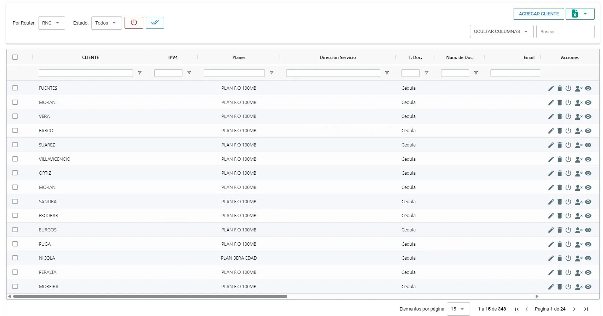
| Columna | Qué muestra |
|---|---|
| Cliente | Nombre o razón social del cliente. |
| IPv4 | Dirección IP asignada al servicio. |
| Plan | Plan de internet contratado. |
| Dirección servicio | Lugar donde está instalado el servicio. |
| Último pago | Fecha y hora del último pago registrado. |
| Deuda actual | Valor pendiente acumulado del cliente. |
| Estado pago | Pagado · Pendiente · No pagado |
| Estado servicio | Activo · Suspendido · Retirado |
Cómo buscar un cliente
Puedes buscar un cliente usando diferentes datos disponibles en el sistema.
- Nombre o apellido.
- Número de documento.
- Dirección IP asignada.
- Número de teléfono.
- Plan contratado.
- Estado de pago o estado de servicio.
Detalle de cliente
Al abrir un cliente se despliega una ficha con pestañas que contienen toda la información del servicio, facturación, soporte y actividad.
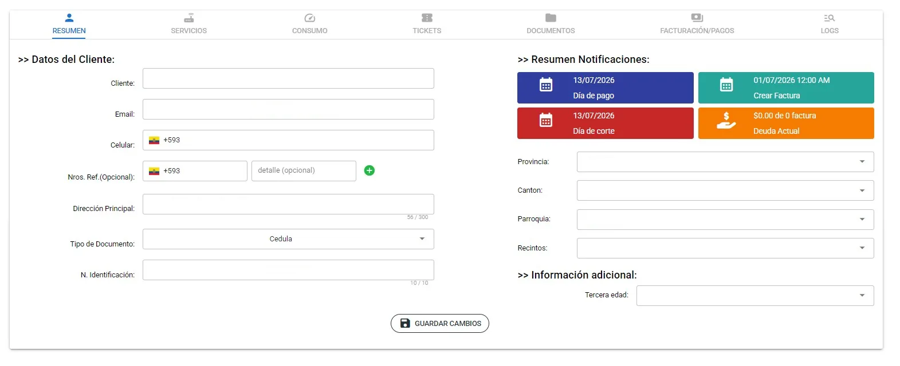
| Pestaña | Contenido |
|---|---|
| Resumen | Datos personales y generales del cliente. |
| Servicios | Planes activos, IP asignada, router, contrato y acciones técnicas disponibles. |
| Tickets | Solicitudes o problemas reportados y su estado actual. |
| Documentos | Contratos firmados y archivos adjuntos del cliente. |
| Facturación / Pagos | Historial de facturas, deuda, pagos y comprobantes. |
| Logs | Registro de acciones realizadas sobre el cliente. |
Acciones comunes
| Acción | Para qué sirve |
|---|---|
| Ver servicios | Revisar plan, IP, router, estado del servicio y datos técnicos. |
| Ver facturación | Consultar facturas, pagos, deuda y comprobantes del cliente. |
| Crear ticket | Registrar una solicitud de soporte o problema reportado por el cliente. |
| Ver documentos | Revisar contratos, archivos adjuntos o documentos relacionados. |
| Revisar logs | Consultar cambios o acciones realizadas sobre el cliente. |
Facturación automática
Permite que ISPMAX genere por adelantado la próxima factura mensual del cliente, sin que el operador tenga que crearla manualmente. Se configura por servicio desde la pestaña Facturación / Pagos del cliente, indicando cuántos días antes del vencimiento se debe generar la factura.
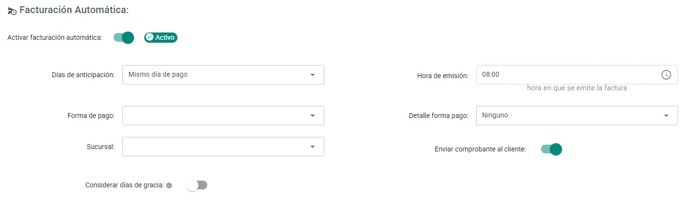
Cómo funciona
El sistema revisa los servicios cada inicio de mes y, según los días configurados, prepara la factura del mes siguiente con la fecha de pago habitual del cliente. La factura queda registrada con estado No pagado hasta que se cobre.
| Opción | Significado |
|---|---|
| Desactivado | El sistema no genera facturas anticipadas para este servicio. Las facturas se crean manualmente o el día 1 de cada mes según el flujo estándar. |
| 1 a 26 días antes | El sistema genera la próxima factura con esa anticipación respecto al fin del mes en curso. Por ejemplo, si se elige 5 días antes, la factura del mes siguiente aparecerá disponible 5 días antes de que termine el mes actual. |
Requisitos
- El servicio debe estar configurado con tipo de comprobante Factura. Los servicios marcados como Recibo no entran en la facturación automática.
- El servicio debe tener definido Día de pago, Tipo de impuesto y Plan de internet válidos, ya que esos datos se heredan a la factura generada.
- Si el cliente tiene cargos recurrentes activos, se incluyen automáticamente en la factura generada.
Relación con clientes suspendidos
El comportamiento con servicios suspendidos depende del ajuste global Crear facturas a suspendidos en Ajustes › Facturación. Si está activo, los servicios suspendidos también reciben factura anticipada; si está inactivo, se omiten hasta su reactivación.
Estados principales
Estados del cliente / servicio
- Activo Servicio habilitado y operativo.
- Suspendido Servicio pausado por deuda o solicitud.
- Retirado Cliente sin servicio vigente.
Estados de pago / factura
- Pagado Factura cancelada en su totalidad.
- Pendiente Factura con pago parcial o estado intermedio. Revisa el detalle antes de anular, cobrar o modificar.
- No pagado Sin ningún pago registrado.
- Anulado Documento cancelado, no tiene efecto financiero.
Tickets de soporte
Los tickets permiten registrar solicitudes, fallas o trabajos técnicos. Dan seguimiento desde que se reporta el problema hasta que se resuelve, y quedan como historial de atención al cliente.
Crear ticket
Desde el perfil del cliente o desde el módulo Tickets. Se registra asunto, prioridad, técnico asignado y descripción del problema.
Seguimiento
El estado se actualiza según el avance: Abierto → En proceso → Resuelto → Cerrado.
Historial
Sirve como evidencia de la atención y soporte brindado al cliente a lo largo del tiempo.
Saldos / Cargos
Desde la pestaña Facturación/Pagos dentro del perfil del cliente se gestionan los pagos de facturas, los saldos a favor o en contra, y los cargos recurrentes manuales.
Agregar una factura
El listado muestra las facturas del cliente con su estado. Desde aquí se puede crear una nueva factura con el botón Agregar Factura.
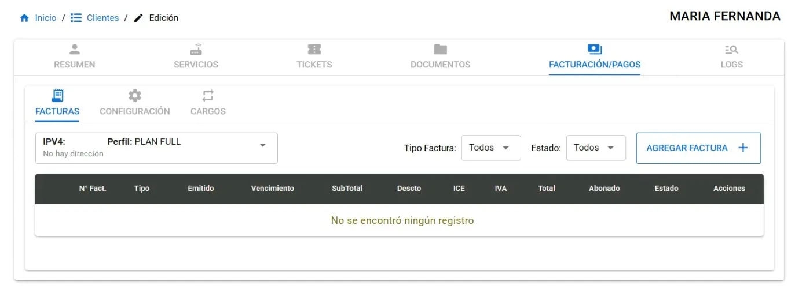
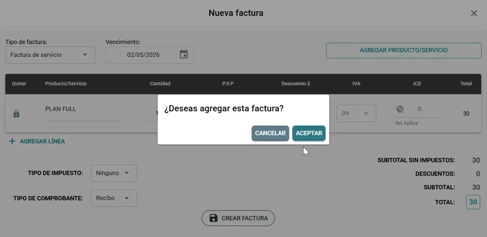
Registrar un pago
Una factura recién creada aparece con estado No pagado. Para registrar un pago, haz clic en el ícono de visto (✓) en la columna Acciones.
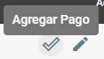
En el formulario de pago puedes ingresar el monto total o solo una parte. Si el monto ingresado es menor al total de la factura, el saldo restante puede pasarse automáticamente a la siguiente factura activando la opción Pasar a siguiente factura.
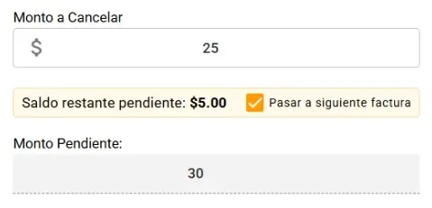
Para pagar el total de la factura en un solo paso, activa el toggle Pagar Importe Total. Al desactivarlo puedes ingresar un monto personalizado.
Si el monto ingresado es mayor al total de la factura, el excedente queda a favor del cliente. Activando Acreditar a siguiente factura, ese valor se descuenta automáticamente de la próxima factura.
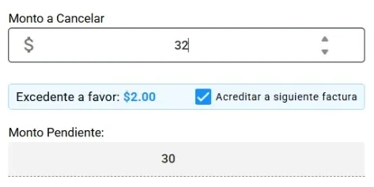
Cargos recurrentes
La pestaña Cargos muestra los cargos recurrentes asignados al cliente, su tipo de pago, monto, estado y las facturas que han generado.
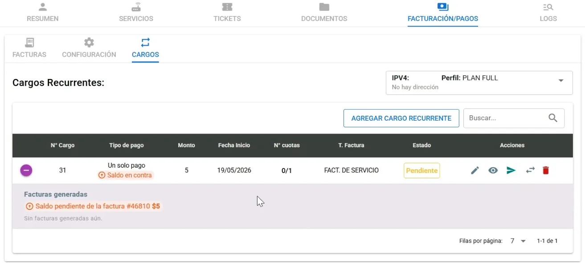
Para agregar un cargo manual, haz clic en Agregar Cargo Recurrente. Puedes definir el tipo de pago, el tipo de factura, los productos o servicios a incluir, impuestos y tipo de comprobante.
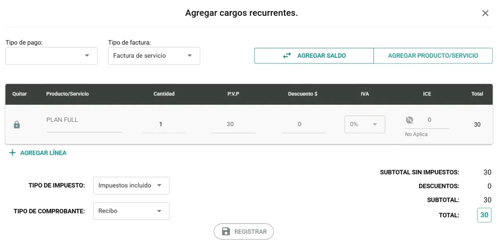
Dentro del mismo formulario, el botón Agregar Saldo permite registrar un ajuste directo al cliente: elige A favor para aplicar un descuento, o En contra para registrar un cargo pendiente. Puedes añadir una descripción opcional.
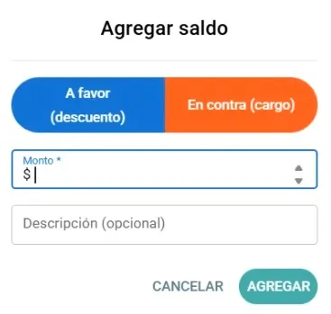
Proveedores
Permite registrar y administrar los proveedores del ISP: empresas o personas a quienes se realizan compras o pagos. Los proveedores registrados aquí pueden asociarse en Compras e Ingresos/Egresos.
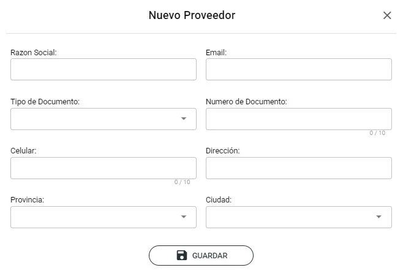
| Campo | Descripción |
|---|---|
| Razón Social | Nombre comercial o legal del proveedor. |
| Tipo de Documento | RUC, Cédula, Pasaporte u otro. |
| Número de Documento | Identificación fiscal del proveedor. |
| Correo de contacto. | |
| Celular | Número de contacto. |
| Dirección | Dirección física del proveedor. |
| Provincia / Ciudad | Ubicación del proveedor. |
Registrar pago
Permite ingresar un pago de forma manual. Se busca al cliente, se selecciona la factura correspondiente y se elige el tipo de pago.
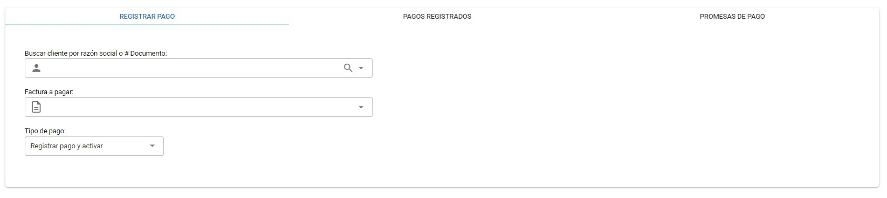
Pagos registrados
Muestra el historial completo de pagos. Es el módulo principal para cierres de caja, auditorías y revisión de cobros por operador, fecha o forma de pago.
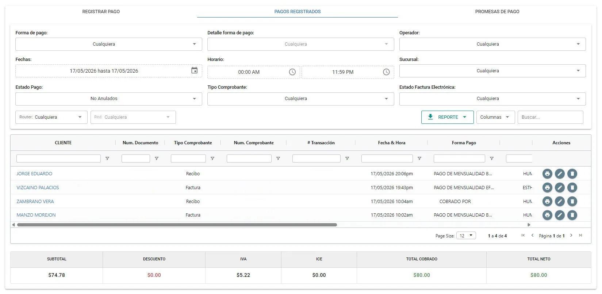
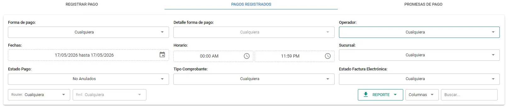
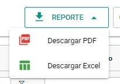
| Filtro | Uso |
|---|---|
| Forma de pago | Filtra por efectivo, bancos, instalaciones u otra forma configurada. |
| Detalle forma de pago | Precisa el canal: efectivo oficina/sucursal, transferencia, depósito, etc. |
| Operador | Persona que registró el pago en el sistema. |
| Fechas y horario | Rango de búsqueda por día y franja horaria. |
| Sucursal | Punto de atención donde se procesó el pago. |
| Estado pago | No anulados, anulados o generados automáticamente. |
| Tipo comprobante | Recibo o Factura. |
| Estado FE | Autorizados o No autorizados por el SRI. |
| Reporte | Descarga PDF o Excel del resultado filtrado. |
Promesas de pago
Registra el compromiso de un cliente para cancelar una factura o deuda en una fecha acordada. Permite dar seguimiento sin perder el historial del acuerdo.
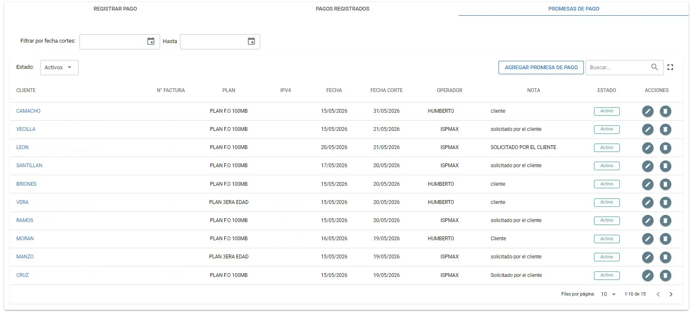
- Buscar cliente: selecciona el cliente que realiza el compromiso.
- Factura a pagar: elige la factura pendiente relacionada.
- Fecha límite de pago: día acordado para cancelar la deuda.
- Nota: resumen breve del acuerdo registrado.
Compras
Permite registrar los productos o materiales adquiridos por la empresa. Ayuda a controlar gastos, llevar historial de proveedores e impactar el inventario cuando corresponde. Ejemplos de uso: compra de rollos de fibra, conectores, equipos o accesorios de instalación.
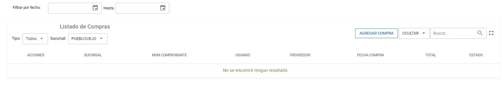
| Campo | Descripción |
|---|---|
| Proveedor | Persona o empresa a quien se realiza la compra. |
| Sucursal | Punto donde se registra la compra. |
| Número de comprobante | Referencia del documento recibido. |
| Productos | Artículos, materiales o equipos comprados. |
| Cantidad | Número de unidades adquiridas. |
| Descuento / IVA | Valores aplicados a la compra según corresponda. |
| Total | Valor final de la compra registrada. |
Ingresos / Egresos
Registra movimientos de dinero que no corresponden directamente al cobro mensual de internet: gastos operativos, ingresos adicionales, pagos a proveedores o compromisos periódicos. También permite crear movimientos recurrentes para gastos o ingresos que se repiten.
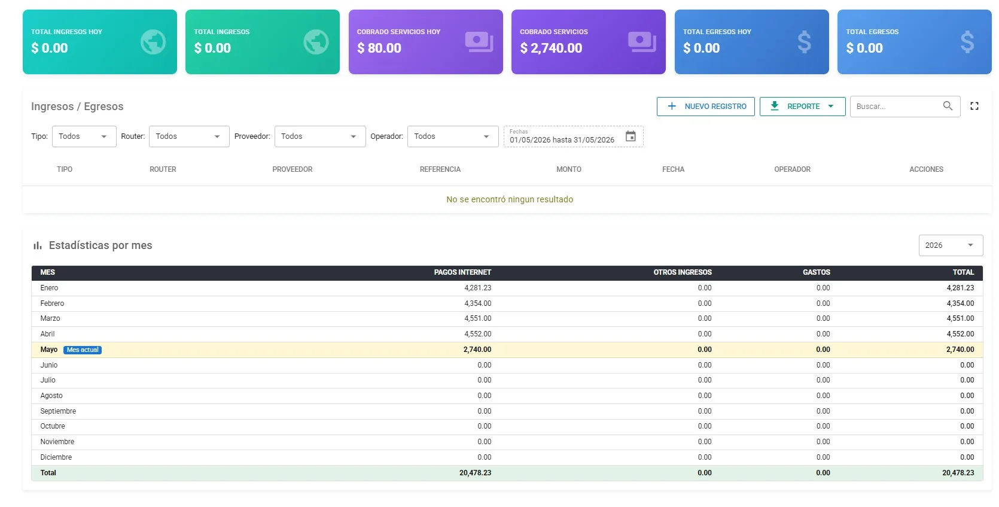
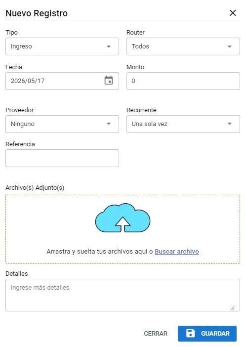
| Campo | Descripción |
|---|---|
| Tipo | Ingreso (dinero que entra) o Egreso (dinero que sale). |
| Router | Router o zona relacionada con el movimiento, si aplica. |
| Fecha | Fecha en que ocurrió el movimiento. |
| Monto | Valor del ingreso o gasto. |
| Proveedor | Proveedor relacionado, si corresponde. |
| Recurrente | Indica si el movimiento se repite: una sola vez, mensual, anual, etc. |
| Referencia | Código, número de comprobante u otra referencia del movimiento. |
| Archivo adjunto | Soporte documental del gasto o ingreso (facturas, recibos, etc.). |
| Detalles | Nota explicativa adicional. |
Personas
Vista general de personas registradas en el sistema. Permite buscar, editar y agregar registros con datos básicos de identificación y contacto.
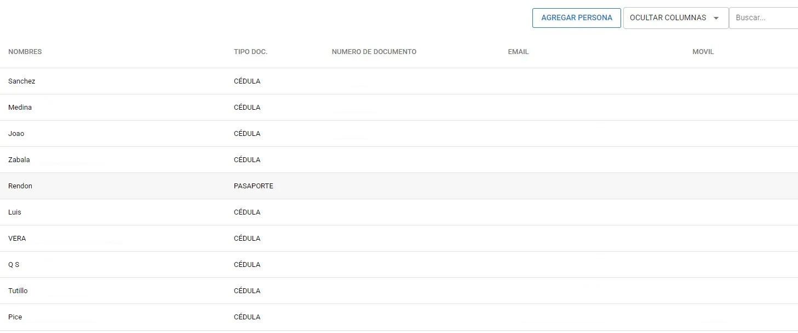
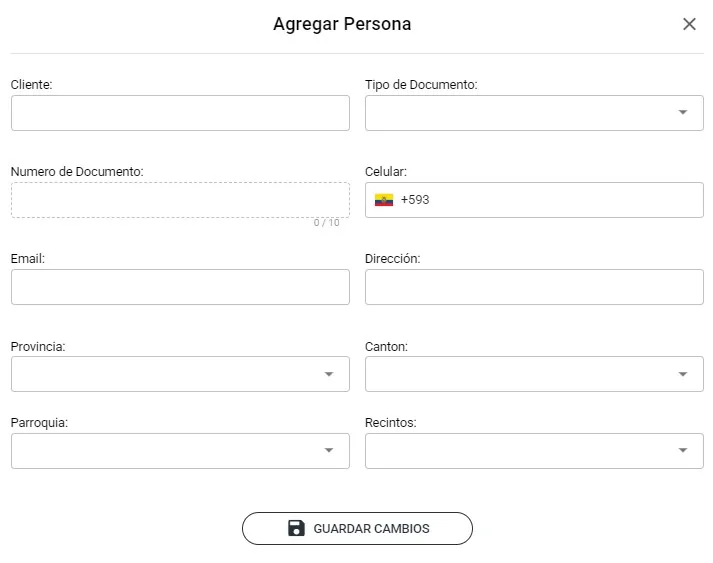
| Campo | Descripción |
|---|---|
| Cliente | Nombre completo de la persona. |
| Tipo de Documento | Cédula, RUC, Pasaporte u otro. |
| Número de Documento | Número de identificación. |
| Celular | Número de contacto con código de país. |
| Correo electrónico de la persona. | |
| Dirección | Dirección física. |
| Provincia / Cantón / Parroquia | Ubicación geográfica del registro. |
Facturas
Permite consultar las facturas emitidas por el sistema, revisar su estado y generar nuevas cuando sea necesario. Es uno de los módulos más utilizados para auditoría y control financiero.
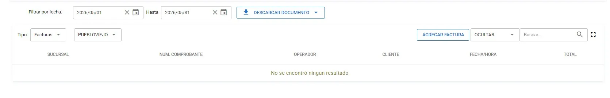
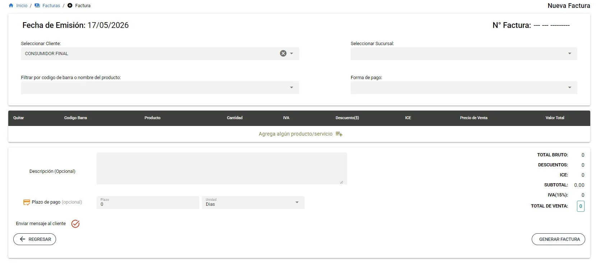
| Campo | Uso |
|---|---|
| Fecha de emisión | Día en que se genera la factura. |
| N° Factura | Identificador secuencial del documento. |
| Cliente | Persona o empresa a quien se factura. Por defecto: CONSUMIDOR FINAL. |
| Sucursal | Punto de emisión del comprobante. |
| Forma de pago | Canal de cobro seleccionado. |
| Productos / servicios | Ítems que componen la factura. Se buscan por nombre o código de barras. |
| Subtotal / IVA / ICE / Descuento | Desglose de impuestos y descuentos aplicados. |
| Total de venta | Valor final a cobrar. |
| Plazo de pago | Días o fecha límite para cancelar (opcional). |
| Enviar mensaje al cliente | Activa el envío automático del comprobante al cliente. |
Transacciones
Concentra los movimientos de pago registrados. Es la vista principal para verificar cobros, imprimir comprobantes, revisar el historial financiero y generar reportes de cierre.
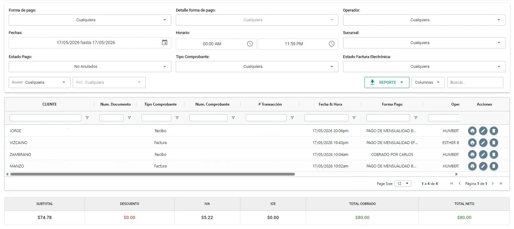
Los filtros disponibles permiten buscar por forma de pago, detalle de forma de pago, operador, fecha, horario, sucursal, estado de pago, tipo de comprobante, router y red. Después de filtrar, puedes descargar el reporte en PDF o Excel o revisar el detalle de cada transacción.
Productos y servicios
Permite administrar los productos físicos y servicios adicionales del ISP: nombre, código de barras, stock disponible, descuento, precio de compra, precio de venta (PVP) y estado.
Los productos pueden ser materiales físicos, equipos, accesorios o servicios adicionales que luego pueden usarse en compras o facturación.
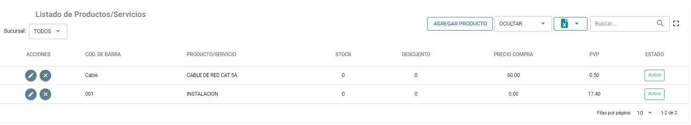
| Campo | Descripción |
|---|---|
| Nombre | Nombre del producto o servicio. |
| Código de barras | Código usado para identificar o buscar el producto rápidamente. |
| Stock | Cantidad disponible en inventario. |
| Precio de compra | Valor al que se adquirió el producto. |
| PVP | Precio de venta al público. |
| Descuento | Descuento configurado si aplica. |
| Aplica IVA | Indica si el producto o servicio genera IVA. |
| Estado | Indica si el producto está activo o inactivo. |
Panel de ajustes
Reúne las opciones de configuración sensibles del sistema. Deben ser utilizadas únicamente por personal autorizado, ya que pueden afectar facturación, cortes, permisos, mensajería y datos maestros.
Configuración de cortes
Define cuándo y cómo el sistema aplica cortes automáticos a los servicios con pagos vencidos. Una configuración correcta ayuda a reducir revisiones manuales y mantener mayor control sobre clientes vencidos.
| Bloque | Qué controla |
|---|---|
| Días habilitados para cortes | Define qué días de la semana el sistema puede ejecutar cortes. |
| Facturación | Permite habilitar las notificaciones automáticas asociadas al corte (aviso al cliente al suspender el servicio). La generación de facturas anticipadas se configura por cliente en Facturación automática. |
| Horarios de cortes | Establece la hora exacta en que se ejecuta el corte para cada día habilitado. |
| Reintentos automáticos | Configura cuántas veces el sistema reintenta aplicar el corte si un router no responde, y el tiempo entre cada intento. |
| Aplicar cortes en | Selecciona las plataformas donde se ejecutan los cortes: MikroTik, SmartOLT y/o AdminOLT. |
| Aplicar cortes manualmente | Ejecuta el proceso de cortes de forma inmediata sin esperar el horario programado. |
Facturación
Configura el comportamiento del módulo de facturación: qué se genera automáticamente, qué se exige al anular, y cómo se manejan los saldos y excedentes de los clientes.
| Opción | Qué hace |
|---|---|
| Crear facturas a suspendidos | Permite que el sistema genere facturas aunque el cliente tenga el servicio suspendido. Útil para mantener el registro de deuda activo durante la suspensión. |
| Crear factura por cada abono | Genera un comprobante individual por cada pago parcial registrado, en lugar de acumularlos en una sola factura. |
| Pedir motivo al anular factura/pago | Al intentar anular una factura o pago, el sistema abre un campo para ingresar la razón de la anulación. |
| Motivo de anulación obligatorio | Impide completar la anulación si no se ha ingresado el motivo. Trabaja en conjunto con la opción anterior. |
| Marcar por defecto pasar saldo/excedente a la siguiente factura | Preselecciona automáticamente la opción de trasladar el saldo restante o excedente a la próxima factura del cliente. Agiliza el proceso de cobro sin tener que activar la casilla manualmente en cada pago. |
OLTs
Permite configurar funciones generales para SmartOLT y AdminOLT, como el reinicio automático de ONUs y la validación de equipos registrados en cada plataforma.
Logs y plantillas
Logs permite revisar el historial de procesos y cambios del sistema. Plantillas permite personalizar los textos que ISPMAX usa para comunicarse con clientes y técnicos.
Variables disponibles en plantillas
Las variables son palabras entre llaves que el sistema reemplaza automáticamente por el dato real del cliente al momento del envío.
| Variable | Se reemplaza por |
|---|---|
{cliente} | Nombre del cliente. |
{empresa} | Nombre de la empresa. |
{plan} | Plan de internet contratado. |
{corte} | Fecha de corte o vencimiento. |
{total} | Valor pendiente de pago. |
{contrato} | Número o nombre del contrato. |
{fecha_contrato} | Fecha del contrato. |
Plantillas disponibles
| Plantilla | Uso |
|---|---|
| Recordatorio de pago | Mensajes automáticos para recordar deudas o fechas próximas de vencimiento. Permite configurar hasta 3 horarios de envío y si se suma el día de gracia. |
| Mensaje de bienvenida | Texto enviado automáticamente a nuevos clientes al activar su servicio. |
| Aviso de pagos recibidos | Confirmación de pago enviada al cliente cuando se registra un cobro. |
| Formato de impresión de pagos | Diseño del comprobante impreso que se entrega al cliente. |
| Tickets | Mensajes relacionados con la apertura, seguimiento o cierre de tickets de soporte. |
| Aviso de contrato | Textos asociados a la firma o renovación de contratos. |
| Plantilla documento | Formato de documento genérico para otros usos internos. |
| Cargos recurrentes | Mensajes o formatos para cobros periódicos adicionales. |
Mensajería
Permite configurar WhatsApp y correo electrónico para enviar mensajes individuales o masivos a clientes. Tiene dos secciones: Configuración (credenciales de los canales) y Mensajes Masivos (redacción y envío).
Gestión de personal
Permite administrar los usuarios del sistema ISPMAX: crear, editar, activar o desactivar cuentas, y configurar sus accesos y permisos.
| Campo | Descripción |
|---|---|
| Nombre / Apellidos | Identificación del usuario. |
| Usuario | Nombre de usuario para iniciar sesión. |
| Correo electrónico del usuario. | |
| Teléfono móvil | Número de contacto del operador. |
| Rol | Nivel de acceso: Técnico, Administrador o Super Administrador. |
| Permisos Router | Routers que el usuario puede ver y gestionar. |
| Sucursal | Sucursal a la que pertenece o tiene acceso el usuario. |
| Estado | Activo o Inactivo. |
| Foto | Imagen de perfil del usuario. |
| Horario de acceso | Días y rango horario en que el usuario puede iniciar sesión. |
| Contraseña | Campo para asignar o cambiar la contraseña del usuario. |
| Permisos por módulo | Control granular sobre qué puede ver o hacer en Dashboard, Gestión de Red, Gestión de Clientes, Finanzas y Ajustes. |
Roles, empresa y sucursales
Agrupa tres configuraciones relacionadas con la estructura del ISP en el sistema.
Roles y permisos
Define los niveles de acceso del sistema. Los tres roles por defecto son: Técnico, Administrador y Super Administrador. Se pueden crear roles personalizados con el botón Agregar Rol.
Empresa
Contiene los datos del ISP: RUC, nombre comercial, dirección, email, celular, logo y si requiere facturación electrónica. Esta información aparece en los comprobantes generados.
Sucursales
Puntos de atención o emisión del ISP. Cada sucursal tiene dirección, número de establecimiento, punto de emisión y número de factura. Se agregan desde el botón Agregar Sucursal.
Base de datos
Agrupa herramientas avanzadas para adaptar y gestionar la información del sistema: campos personalizados, cambios masivos y administración de ubicaciones.
| Sección | Qué hace |
|---|---|
| Campos personalizados | Agrega campos extra al perfil de los clientes para registrar información específica del ISP. El nombre del campo usa guiones bajos en lugar de espacios (ej. numero_contrato). Una vez creado, aparece en la ficha de todos los clientes. |
| Cambios masivos | Actualiza configuraciones de facturación para muchos clientes simultáneamente: día de pago, tipo, impuesto, días de gracia, tipo comprobante y más. Solo modifica los campos editados; los que se dejan en blanco no cambian. |
| Ubicaciones | Gestiona provincias, cantones y parroquias disponibles en los formularios del sistema. |
| Eliminar datos | Permite borrar registros de una tabla seleccionada, filtrados por router, red o plan. Acción irreversible; requiere respaldo previo. |
Sistema
Permite ejecutar la actualización de ISPMAX desde el servidor. Al presionar Actualizar Sistema, se inicia el proceso de actualización de la plataforma a la versión más reciente disponible.
Formas de pago
Permite crear y organizar los canales de cobro disponibles en el sistema. Cada forma de pago puede agrupar varios detalles específicos.
Rutinas diarias recomendadas
Administrador
- Revisar el Dashboard al inicio del día.
- Verificar routers activos y sus conexiones.
- Consultar facturas no pagadas y vencidas.
- Revisar usuarios, permisos y accesos activos.
- Confirmar que los cortes automáticos se ejecutaron correctamente en Logs.
Operador
- Revisar pagos del día en Transacciones.
- Confirmar facturas pendientes y registrar cobros.
- No registrar pagos duplicados; verificar primero en Pagos registrados.
- Descargar reportes al cerrar caja si aplica.
Técnico
- Revisar tickets abiertos y en proceso.
- Validar el router e IP del cliente antes de ir a campo.
- Usar el Mapa para ubicar la dirección del servicio.
- Actualizar el estado del ticket al finalizar la atención.
Preguntas frecuentes
¿Por qué un cliente aparece sin deuda?
¿Qué hago si un pago no aparece en el listado?
¿Por qué un router aparece sin conexión?
¿Qué significa el estado Pendiente en una factura?
¿Qué módulos debo usar con precaución?
¿Cómo busco un cliente si no recuerdo su nombre exacto?
Glosario rápido
Cliente
Persona o empresa que recibe el servicio de internet del ISP.
Servicio
Conexión o plan de internet asignado a un cliente específico.
Router
Equipo MikroTik que administra y controla las conexiones de los clientes.
Plan
Paquete de internet con velocidad de descarga/subida y precio mensual definidos.
IP
Dirección de red asignada al cliente o equipo para identificarlo en la red.
CIDR
Notación de máscara de subred (ej. /24 equivale a 254 IPs disponibles).
Factura
Documento generado por el sistema con el valor a cobrar por el servicio.
Pago
Registro del dinero recibido por un servicio o concepto facturado.
Deuda
Valor acumulado pendiente de cancelar por parte del cliente.
Ticket
Solicitud o reporte de soporte técnico vinculado a un cliente.
NAP
Caja de distribución de fibra óptica instalada en campo.
VLAN
Segmentación lógica de red para separar tráfico por tipo o usuario.
OLT
Equipo central de la red de fibra óptica que gestiona las ONUs.
ONU
Equipo en el domicilio del cliente que recibe la señal de fibra óptica.
API
Interfaz de conexión que permite a ISPMAX comunicarse con routers y plataformas externas.
SMTP
Protocolo usado para enviar correos electrónicos desde el sistema.
Burst
Velocidad de ráfaga temporal que supera el límite normal del plan por un tiempo definido.
FE
Factura Electrónica. Documento tributario autorizado por el SRI.